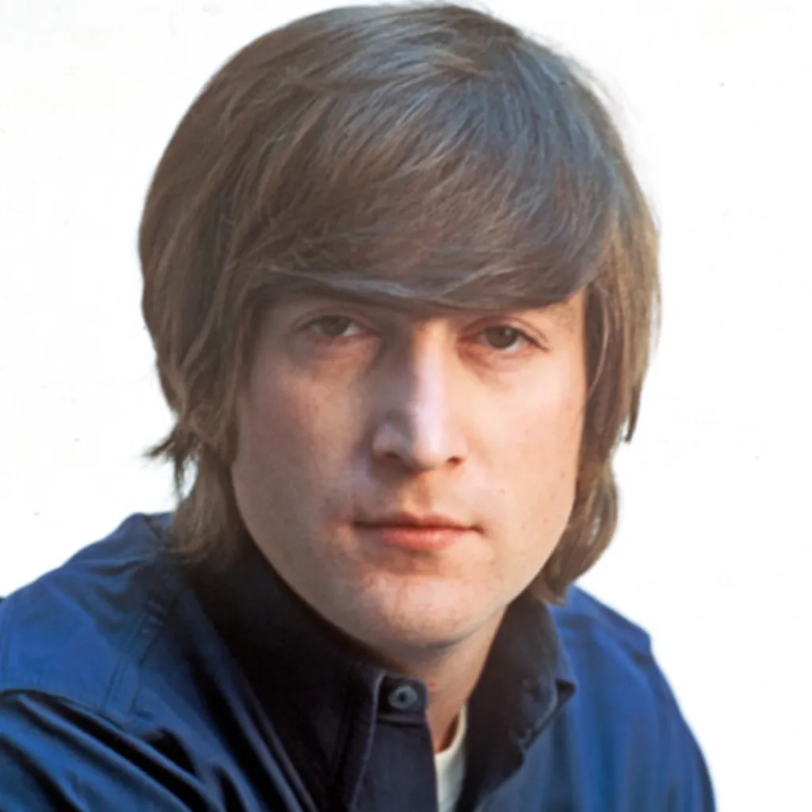

The Beatles
The Beatles were an English rock band formed in Liverpool in 1960, comprising John Lennon, Paul McCartney, George Harrison and Ringo Starr. They are regarded as the most influential band of all time[1] and were integral to the development of 1960s counterculture and the recognition of popular music as an art form.[2] Rooted in skiffle, beat and 1950s rock 'n' roll, their sound incorporated elements of classical music and traditional pop in innovative ways. The band also explored music styles ranging from folk and Indian music to psychedelia and hard rock. As pioneers in recording, songwriting and artistic presentation, the Beatles revolutionized many aspects of the music industry and were often publicized as leaders of the era's youth and sociocultural movements.[3]